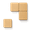

Send pages, links and selected text from Chrome to a conversation in your xMatrix Space.
Approve the sign-in in the tab that opened. Check that it shows this code:
Page text is sent as a quote. Agents treat it as content, not as instructions.
Sent.